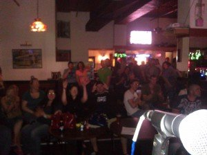
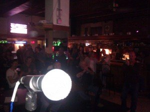

Latest News
July 19th, 2014 by Gino BurgioYet again, another amazing night at The Webster theater! It was great to share the magic with our local friends Stikpin, We are Nothing, Crossing Rubicon and Sever The Drama.
As far as national act’s go, it was very nice to see CT native Howard Jones destroy the stage in his new project Devil You Know. True honor to be in the same room with this man.
Lacuna Coil as always, producing a memorable show for all of their dedicated fans and what an honor to be on the same bill as them!
And now we get to “Starset”….although Civil Drone isn’t afraid to flaunt our metal edge, it was very welcoming to be in the presence of another hybrid, shape shifter slicing through with vocal screams, shrills and blood soaked guitar riffs and then breaking into refined melodies that infected your brain, wanting you to sing over and over again in your head songs like “Carnivore” and “My Demons”.
Their audio display was also matched with mesmerizing visuals such as neon illuminated helmets and attire that really made you feel to be a part of something bigger, transcending any typical rock show.
Perhaps in due time a 30 Seconds to Mars, Starset and Civil Drone tour shall be in order…..we shall see what the future holds…..
A big thank you to all of the new Drones that have discovered our music as a result of last night. Our gift for your support is free music under our “My Store” tab. It’s all about getting out there and experiencing this crazy journey together and we are very happy to have you be a part of our growing family! There is so much more to life than just being a passenger as a civil drone, we are happy you realize that too and welcome you with open arms!
Until November 1st, 2014 when we open for Nonpoint at The Webster theater, we look forward to getting to know you at our local shows as well!
~Gabriel BG~
It is with my utmost pleasure and excitement to announce that after me regrouping to solidify other writing projects, networking in Nashville to become a better songwriter and solo artist development in my progressive pop project Gabriel-BG, that Civil Drone is finally back up and running!!! Version 2.0 is better than ever before!
Under the Gabriel-BG umbrella, Connecticut’s up and rising Alternative Rock group Civil Drone is back together, with core member Marc Charette on drums, along with original Brain Pillow guitarist Just Pirro. To further solidify this line up, we bring in Rob Gagnon, to showcase his many years of technical and tasteful guitar playing and Tommy Iwanicki on bass commanding a strong backing vocal presence.
Unfiltered Rock will always be a cornerstone of my writing and raw vocal abilities and Civil Drone has always been extremely near and dear to me. Under the long tenure and dedication of Marc Charette working behind the scenes orchestrating a strong comeback, together with the new band members, we are happy to bring to date, the most refined version of Civil Drone ever.
We are excited to show our long dedicated Civil Drone army, along with finding new friends, the updated version that promises to mesmerize and leave you going home singing new tunes and as always, having a great night out!
Stay tuned for new Civil Drone show announcements and new music updates by following the below social media links of your preference.
~Gabriel-BG~
www.twitter.com/gabrielbgmusic
www.facebook.com/gabrielbgmusic
www.reverbnation.com/civildrone
Gabriel-BG specific links below:
www.reverbnation.com/gabrielbg
www.soundcloud.com/gabrielbgmusic
We are thrilled at how AMAZING 2012 has been going thus far! Some big things coming up in the near future and we already have been blessed with the amount of support we have been receiving from our fellow drones! We can’t begin to thank each and everyone that came out to The Downtown Cafe in Bristol this past Friday. There were many familiar faces that have come time and time again, and there were some new faces that we were very surprised to see! We were able to meet some new friends as well and as always give out free CD’s to anyone interested. When you spread the love, we are humbled to do so in return. Sincerely, we thank each and everyone for coming out. Check out some of the pictures below of that night!
~Gingles~
{kind=link}

Our fellow drones showing the love
{kind=link}

Our fellow drones showing the love
WOW! So much has been going on lately. Our gig calendar continues to get more and more shows, and we are meeting more and more friends and adding to the Civil Drone Family. Awesome show with Project7 and Klokwize too, we will definitely be sharing the stage again soon! Ok, this is actually pretty huge…. we advanced to the next round of Radio 104.1 WMRQ Talent Warz 2! We couldn’t have done it without each and everyone’s vote. We seriously can’t begin to thank all of you for giving us another opportunity at this competition which will be April 6th with all of the other contestants that have advanced. Here is the YouTube video!
Gingles and Tony taking a phone pic at Radio 104.1 qualifying round at Up or On the Rocks! “Hey, how do you work this thing?”
The crowd at All Stars! These guys love music!
~Gingles~
It’s been a little while but I just wanted you to know that tracking has been going really well on the new album! Drums are done and we’ll be soon be onto Bass and Guitars! Such a cool experience to solidify our original tunes. Some new shows are starting to emerge and we’ll soon be announcing some very exciting news! Oh yeah, a very special thank you to Mike Chaiken for his interview with us in the local paper. Thank you so much Mike, we really appreciate the support and can’t wait to give back to you and the community!
~Gingles
We have been very busy lately wrapping up our final shows of the year as well as refining some new material for our EP scheduled to be released early 2012. We will also be announcing some very exciting news at our first show scheduled for 2012, so you will not want to miss that! At this time on Thanksgiving Day that this post is updated, we would like to give a special thanks to those of you that continue to support us during our begging stages. A HUGE thank you goes out to John Kuleza. You have continued to support us in a big way and we wanted to extend our appreciation of you and acknowledge your contributions. Thank you.
So as we wrap up 2011, we must say that it’s been a wonderful journey thus far. In what was supposed to be a series of select shows while tweaking our lineup and onstage chemistry, turned out to be a year with many opportunities! We’ve added to the Civil Drone family many new “Drones” that have inspired us to reveal our souls and give every last drop of energy to you on stage.
We look forward to starting off 2012 with a bang with a new permanent addition to our line up (Jesse Froebel- Lead Guitar/Backing Vocals) as well as new music and working with new industry professionals to help us get to our goal which is expanding our “Drone” family, writing inspiring music and making each and every show more energetic and exciting then the last.
We look forward to seeing you out there bigger, better and with a new fire to share with each of you.
~Gingles
We are very excited about our recent performances since we’ve last checked in! We continue to meet new friends who are sure to come to future shows which is always a rewarding experience as well as meeting new talented bands such as Little Ugly, Deadfish Handshake, and Yokodevin. We crossed state lines to play at Maximum Capacity in Chicopee MA, and were warmly welcomed by a venue very excited to hear original music! As always, we had a great time at Bleachers in Bristol and look forward to playing future shows including the show we have scheduled with Hearts & Thieves October 8th!
Wow! It has been a while since we’ve had a chance to say hello to our our fellow Drone’s in the cyber world, since we’ve been having such a sweet time playing out and hanging out in person! We can’t begin to thank all of our friends and family that have continued to show support. It is especially beautiful to be meeting so many new faces and adding to our family!
We would like to especially thank the Downtown Cafe in Bristol CT for such a wonderful night! The locals totally were digging the original music! We totally have to give a shout out to Advanced Booking and Entertainment for inviting us to rock the stage at the 3rd annual Rock Ur Ink Off event. There were plenty of amazing bands there, including our new friends Deadfish! Oh yeah, since we’ve been gone we also had a great time at The Webster Underground! As always, nothing but the best original music .
We look forward to another exciting weekend as we get ready for Mad Murphy’s Cafe (thank you Cubed Squared) as well as Bristol Risings Pop-up Piazza festival! Again, we have so much to look forward to, including our debut with our new line up at our hometown in Bristol at Bleachers. This place rocks, and we can’t wait to see you all there!
As always, much love for the continued support of Ken, Ashley, Doug, Phuc, Zethe, Brenden, Kellie, Marjorie, Eric, Elmar, Tim, Steph, again…too many to list, but it is insanely appreciated!
Until next time!
~Gingles